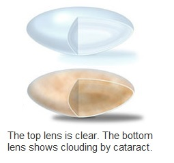
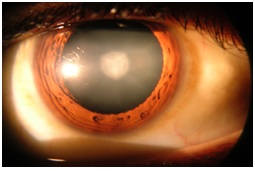
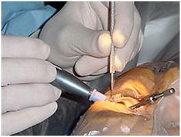
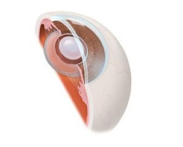

Cataracts are not a disease per se, its age related changes in natural lens of eye. Inside our eyes, we have a natural lens which bends (refracts) light rays that come into the eye to help us see. The lens should be clear, like the top lens in the illustration.
 
If you have a cataract, your lens has become cloudy, like the bottom lens in the illustration. It is like looking through a foggy or dusty car windshield. Things look blurry, hazy or less colorful with a cataract.
Most age-related cataracts develop gradually. As a result, you may not notice signs or changes in your vision right away when cataracts first develop.
Here are some vision changes you may notice if you have a cataract:
Cataracts can be removed only with surgery. If your cataract symptoms are not bothering you very much, you don’t have to remove a cataract. You might just need a new eyeglass prescription to help you see better. You should consider surgery when cataracts keep you from doing things you want or need to do.
Cataract surgery is an operation to remove your eye’s lens when it is cloudy. During cataract surgery, your cloudy natural lens is removed and replaced with a clear artificial lens. That lens is called an intraocular lens (IOL). Surgery is usually 'outpatient' and performed using local anesthesia or topical anaseshtesia (Using only numbing drops for surgery, no injection). Phacoemulsification is the most widely used cataract surgery in the developed world. This procedure uses ultrasonic energy to emulsify the cataract lens. Usually your surgeon will not need to stitch the incisions closed. These “self sealing” incisions eventually will close by themselves over time.
An intraocular lens (or IOL) is a tiny, artificial lens for the eye. It replaces the eye’s natural lens that is removed during cataract surgery. The lens bends (refracts) light rays that enter the eye, helping you to see. Your lens should be clear. But if you have a cataract, your lens has become cloudy. Things look blurry, hazy or less colorful with a cataract. Cataract surgery removes this cloudy lens and replaces it with a clear IOL to improve your vision. IOLs come in different focusing powers, just like prescription eyeglasses or contact lenses. Your ophthalmologist will measure the length of your eye and the curve of your cornea. These measurements are used to set your IOLs focusing power.
 
Like any surgery, cataract surgery carries risks of problems or complications. Here are some of those risks: